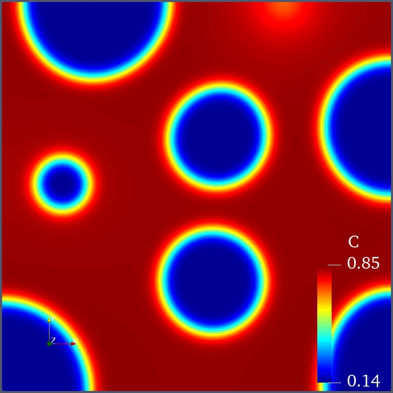

Step 5 - Solve the CahnHilliard equation
Introduction
In this step, we will try to solve the CahnHilliard equation for the spinodal decomposition problem.
The CahnHilliard equation
The CahnHilliard equation can be read as follows:
$$
\begin{equation}
\frac{\partial c}{\partial t}=\nabla\cdot(M(c)\nabla\mu)
\label{eq:ch-c}
\tag{1}
\end{equation}
$$
and
$$
\begin{equation}
\mu=\frac{\delta f}{\delta c}
\label{eq:ch-mu}
\tag{2}
\end{equation}
$$
where $c$ and $\mu$ denote the concentration and chemical potential, respectively. $M(c)$ is the concentration dependent mobility, in this model we use $M(c)=Dc(1-c)$, where $D$ is the diffusion coefficient.
Free energy
In this model, we use the following free energy:
$$
\begin{equation}
f=c\ln(c)+(1-c)\ln(1-c)+\chi c(1-c)+\kappa|\nabla c|^{2}
\label{eq:free-energy}
\tag{3}
\end{equation}
$$
thereby, the chemical potential $\mu$ can be expressed as:
$$
\begin{equation}
\mu=\ln(c)-\ln(1-c)+\chi(1-c)-\nabla^{2}c
\label{eq:mu}
\tag{4}
\end{equation}
$$
where $\chi$ denotes the interaction between two phases. $\kappa$ represents the interface energy contribution, which is proportional to the thickness of the phase interface.
The related boundary conditions can be read as:
$$\begin{equation}
-D\nabla c\cdot\vec{n}=0\qquad\mathrm{on}\quad\partial\Omega_{N}
\label{eq:flux}
\tag{5}
\end{equation}$$
where the zero flux (Neumann) boundary condition is assumed in Eq.$\eqref{eq:flux}$.
Define the mesh
We use a square domain here for our calculation, and then the [mesh] block can be given as:
1 | [mesh] |
where a $4\times4$ mesh is defined.
Gauss point integration (optional)
If one wants to use second order mesh, for instance meshtype=quad9, then one need to use a higher order gauss points. This can be implemented via:
1 | [qpoint] |
Normally, you don’t need this block!
Define the DoFs
In order to solve the 4th order equation, we split the CH equation into two second-order equations. Therefore, the DoFs used in this step are the concentration $c$ and the chemical potential $\mu$. Then the [dofs] block can be read as:
1 | [dofs] |
Element for the CahnHilliard equation
The model in Eq.$\eqref{eq:ch-c}$ and $\eqref{eq:ch-mu}$ can be applied in the following lines
1 | [elmts] |
where type=cahnhilliard option specifies the element we want to use for the CahnHilliard equation. Moreover, we will use the free energy($F$), the first order derivative of free energy($\frac{\partial F}{\partial c}$), and the second order derivative of free energy($\frac{\partial^{2}f}{\partial c^{2}}$) material properties. Therefore, the related material definition will be given in myf block.
free energy material
Via the following lines in your [mates] block, the material properties, i.e. $F$, $\frac{\partial F}{\partial c}$, and $\frac{\partial^{2}F}{\partial c^{2}}$ can be easily defined:
1 | [mates] |
where type=cahnhilliard specifies constant diffusivity material type. Don’t worry, here we used the same name as the type= in [elmts] block. But AsFem knows that they belong to two different blocks, so it’s fine. params= defines the diffusivity $D=1.0$, the phase interaction constant $\chi=2.5$, and the interface parameter $\kappa=0.02$. If you are using a coarse mesh, please increase $\kappa$ to a larger value, i.e. 0.02 or even higher.
Boundary conditions
Since the zero flux boundary condition is applied, we don’t need any [bcs] block. If Eq.$\eqref{eq:flux}$ is nonzero, then you will definitely need the [bcs] block.
Transient analysis
Again, we need a [job] block to start the FEM calculation, which can be given as follows:
1 | [job] |
Timestepping
In this case, we will use the adaptive time stepping to speed up our simulation. The layout of our [timestepping] block looks like below:
1 | [timestepping] |
where type=be specifies the Backward-Euler (be) method for implicit time integration. dt=1.0e-5 defines that the initial $\Delta_{t}$ and time=1.0e3 means the final time is 1000.0. adaptive=true enables the adaptive time stepping. optiters=3 indicates that if the nonlinear iterations is not greater than 3, then AsFem will increase the new delta t to be $\Delta_{t}=\Delta_{t,\mathrm{old}}*\alpha_{\mathrm{growth}}$. Otherwise, the new delta t will be reduced as $\Delta_{t}=\Delta_{t,\mathrm{old}}*\alpha_{\mathrm{cut}}$. growthfactor and cutfactor represent $\alpha_{\mathrm{growth}}$ and $\alpha_{\mathrm{cut}}$, respectively.
Initial condition
Now, in order to allow the phase separation to take place, we must add the random value to the concentration. As follows, the random concentration value can be applied through the’[ics]’ block:
1 | [ics] |
where the random value is applied via the type=random option. dof= indicates which DoF will be used. params= represent the parameters used in the initial condition calculation. For the type=random case, 0.6 and 0.66 are the min and max value of the random numbers.
Parallel solver
In order to further speed up our simulation, we involve the parallel solver from either mumps or superlu_dist. This can be defined via the [nonlinearsolver] block:
1 | [nonlinearsolver] |
where type=nr indicates the newton-raphson method. solver= determines the name of the parallel solver, in this case, the superlu_dist solver is used. It should be noted that, if external solvers, i.e. mumps and superlu, are not compiled within your PETSc, then you can only use the built-in solver. In short, this option doesn’t make sense to you.
Run it in AsFem
Now, let’s try your fourth example in AsFem. You can create a new text file and name it as step5.i or whatever you like. Then copy the following lines into your input file:
1 | [mesh] |
You can also find the complete input file in examples/tutorial/step5.i.
If everything goes well, you can see the following image in your Paraview:
